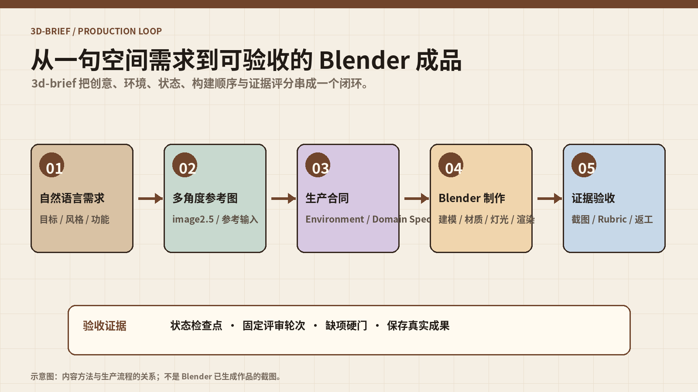

把自然语言 3D 需求变成可验收的 Blender 生产合同
3d-brief 不只是帮你写一段生成提示词，而是把目标、环境、状态、制作顺序、评审证据和返工条件组织成一条可恢复的生产链路。
01 · 先理解它：3d-brief 是生产方法，不是 Blender 本体
3d-brief 是 gm-skills 仓库中的 Claude Code 插件/Skill，负责把自然语言 3D 需求转成创意方向和可执行生产合同。它可以在需求阶段帮助你明确场景、产品、风格、数量、功能、环境能力和预算；在用户明确要求成品后，继续指导 Agent 完成 Blender 建模、渲染评审与验收。
它不自带 Blender、3D 模型、渲染服务或素材采购，也不会因为你调用了 Skill 就自动产出一个已经合格的 `.blend`。真正的生产需要可用的 Blender 环境、目标资源、足够的算力和可复核的评审证据。
| 你说的话 | 默认阶段 | 应得到什么 | 不会自动得到什么 |
|---|---|---|---|
| “做个温暖的小型咖啡吧” | brief | 创意方向、生产简报、检查结果 | 不会直接启动建模 |
| “给我几个创意方向” | 方向探索 | 有区别的方向与取舍 | 不会越过你要求的阶段 |
| “按简报生成 .blend 和渲染” | 授权制作 | 验证环境后进入制作和评审 | 不保证一次通过 |
| “继续上次制作” | 恢复检查点 | 从有效状态、预算和证据继续 | 不会凭记忆重做全部流程 |
02 · 安装与第一次调用
官方 README 给出 Claude Code 市场安装方式。安装后先使用“先交生产简报”的请求，观察它是否停在简报阶段，而不是直接创建制作目录。
/plugin marketplace add ZeroZ-lab/gm-skills
/plugin install 3d-brief@gm-skills
/3d-brief:3d-brief 帮我设计一个温暖的小型咖啡吧，先交生产简报如果使用本地解压的插件目录，可以从插件目录的父目录启动：
claude --plugin-dir ./3d-brief
/3d-brief:3d-brief 帮我做一个桌面音箱，先输出生产合同如果只使用独立 Skill，把 `skills/3d-brief/` 整个目录复制到 `~/.claude/skills/3d-brief/` 或项目 `.claude/skills/3d-brief/`，然后调用 `/3d-brief`。不要只复制 `SKILL.md`，因为辅助参考文件也属于这条工作流。
03 · 一张图看懂闭环

来源帖子描述了“image2.5 生成多角度视角图 → 在 Astro 中用 Blender 生成场景 → 结合 Skills 迭代验证”。这可以作为一种实践链路，但官方 `3d-brief` README 没有把 image2.5、Astro 或某个固定渲染服务声明为插件内置依赖。因此本卡把它们放在“可选的外部输入/环境”位置，不把它们写成安装后必然可用的组件。
04 · 八层生产契约：为什么要先写 brief
3d-brief 的核心是八层生产契约。它把“我想要一张好看的图”改写为可交接、可执行、可验收的约束。每层都回答不同问题，缺一层时，后面的 Agent 很容易用漂亮但不可用的结果掩盖目标缺失。
| 层 | 要写清什么 | 初学者例子 | 验收问题 |
|---|---|---|---|
| Goal | 成果是什么、给谁用、交付哪些文件 | 一个可旋转查看的桌面音箱 `.blend` 和三张渲染图 | 结果是否能被第三方打开和判断 |
| Environment | Blender 版本、插件、GPU/CPU、预算 | 本机 Blender、Cycles、固定输出分辨率 | 环境是否真的具备，不靠猜 |
| Protocol | 状态、检查点、命名、恢复方式 | 每轮保存工程和渲染清单 | 中断后能否继续 |
| Build Order | 先做什么、每阶段何时停下来检查 | 体块 → 材质 → 灯光 → 镜头 → 渲染 | 是否在错误基础上继续堆细节 |
| Domain Spec | 数量、尺寸、功能、空间关系 | 两个单元、一个旋钮、指定开孔 | 硬约束是否逐项存在 |
| Review Loop | 用哪些固定机位和证据评审 | 正面、侧面、背面和总览 | 证据是否覆盖关键面 |
| Rubric | 评分项与不可抵消的缺项 | 结构缺失不能被材质高分抵消 | 是否存在硬门 |
| Validation | 检查真实保存的 `.blend`、渲染和清单 | 文件存在、能打开、数量正确 | 验收的是产物而非描述 |
05 · 产品分支和空间分支：不要用同一张表描述所有 3D 任务
官方内容把任务分成产品和空间两个方向。产品资产关注形体、尺寸、部件关系、材质和可视角度；空间场景还要处理动线、区域、家具、灯光、机位和空间功能。先选分支，能避免把“一个音箱”和“一间咖啡吧”混在同一套验收标准里。
| 维度 | 产品资产 | 空间场景 |
|---|---|---|
| 目标 | 可识别、可制造感、部件关系正确 | 空间氛围、功能分区、动线和镜头成立 |
| 硬约束 | 数量、比例、开孔、按钮、接口 | 入口、座位、吧台、通道、墙面和设备位置 |
| 主要证据 | 正侧背面、细节特写、线框/材质对照 | 总览、主要机位、动线节点、功能区 |
| 常见返工 | 尺寸错、部件漏、材质覆盖结构 | 比例错、空间拥堵、镜头看不到重点 |
如果你输入的是“温暖的小型咖啡吧”，不要只给一句风格词。至少补上使用人数、座位关系、入口、吧台功能、动线、材料偏好、视角数量、交付格式和预算级别。
06 · 生产配置：环境、人数、评审轮次和退出条件
生产配置规则决定这次任务需要哪些 Agent、多少轮评审、多少机位以及什么时候停止。示例中的严格 Skyline 配置有至少 4 轮和指定 16 机位，但它是特殊参考案例，不能机械继承到所有任务。
| 任务复杂度 | 建议轮次 | 先固定的内容 | 何时加大预算 |
|---|---|---|---|
| 简单单体 | 1–3 轮 | 主体形体、关键部件、一个主视角 | 比例或结构反复失败 |
| 常规空间 | 2–4 轮 | 空间比例、区域和主机位 | 动线、灯光或家具冲突 |
| 高风险/严格复刻 | 按合同固定多轮、多机位 | 硬约束与证据覆盖 | 只有增加证据能降低风险时 |
- 环境声明：有哪些 Blender、渲染器、插件、脚本和硬件。
- 任务分工：谁负责研究、建模、渲染、评审和记录。
- 资源预算：时间、轮次、渲染张数和可接受返工次数。
- 硬门：缺失关键部件、错误文件格式、无法打开或证据不足时不得以平均分通过。
- 条件退出：连续多轮没有改善，或目标本身不可验证时，停止并报告原因。
07 · 从参考图到 Blender：多角度输入怎么变成可执行约束
多角度图的价值不是让 Agent“照着感觉建模”，而是帮助建立跨视角的一致约束。准备输入时，尽量提供正面、侧面、背面、顶部或关键局部，并注明哪些内容是确定事实、哪些只是创意参考。
- 列出参考图中必须保留的结构：轮廓、比例、开口、分件、材质分区。
- 区分不可见面和推断面：看不到的背面不能伪装成已确认事实。
- 给每个视角命名，并说明它用于建模、材质还是验收。
- 把图像生成工具的结果视为参考输入，检查多张图之间是否互相矛盾。
- 在 brief 中写“如果参考图冲突，优先采用哪一张或由谁决策”。
参考输入
- front.png：确认正面轮廓、主开孔、按钮数量
- side.png：确认深度比例和侧面材质
- rear.png：确认接口区域；若不可见则标记 UNKNOWN
- mood.png：只用于色彩和灯光方向，不作为尺寸证据
冲突规则
- 结构事实优先于风格参考
- 可见视角优先于模型猜测
- UNKNOWN 不得在最终报告中写成已验证08 · Build Order：为什么不能一上来就做细节
分阶段制作的目的，是在成本最低时发现方向错误。先做体块和比例，再确认功能与部件，之后才是材质、灯光、镜头和高质量渲染。每一步都有“停下来检查”的机会。
例如一个桌面音箱，第一轮只检查外轮廓、单元数量和旋钮位置；第二轮检查开孔、接口、网罩与底座；第三轮再处理木纹、金属、软包和灯光；最后用固定机位渲染并按 rubric 复核。这样材质的“好看”不能掩盖结构的“缺失”。
09 · Review Loop：固定证据比一句“看起来不错”更重要
评审要使用固定证据：相同机位、相同输出标准、明确的评分项和缺项硬门。每轮记录图片、检查结果、问题、修复动作和下一轮目标。不要每轮随意换镜头，否则你无法判断是模型变好了，还是证据换了。
| 证据 | 检查什么 | 失败后动作 |
|---|---|---|
| 总览图 | 整体构图、空间比例、主次关系 | 先修体块和动线 |
| 正/侧/背面 | 结构、部件、不可见面假设 | 补模型或标记未知 |
| 细节图 | 接口、材质边界、功能组件 | 回到 Domain Spec |
| 线框/辅助图 | 穿模、空洞、重复面、拓扑风险 | 修几何，不用材质遮挡 |
| 文件检查 | `.blend` 是否保存、路径是否正确、依赖是否可复现 | 重新保存并记录环境 |
10 · 迭代验证：把返工变成有条件的决策
3d-brief 不是让 Agent 无限修改，而是根据证据和评分决定是否返工。先判断问题属于目标不清、环境不具备、模型执行错误、证据不足还是审美偏好；不同原因的修复动作不同。
| 问题类型 | 表现 | 修复方式 |
|---|---|---|
| 目标缺失 | “温暖”“高级”但没有尺寸/功能/交付物 | 补 Goal 和 Domain Spec |
| 环境失败 | 插件、渲染器或文件路径不可用 | 先修 Environment，不继续建模 |
| 执行失败 | 部件漏建、脚本报错、保存失败 | 定位阶段，回滚到有效检查点 |
| 证据不足 | 只有一张总览，无法确认背面 | 补固定机位或辅助图 |
| 风格偏好 | 硬约束都满足，但色彩不合意 | 进入下一轮审美调整 |
每一轮只改变少数变量，并记录“改变了什么”。如果连续几轮只在审美细节上摇摆，应回到目标和 rubric 检查，而不是继续消耗渲染预算。
11 · 输出结构：让别人能打开、理解和恢复
授权制作后的聚合目录包含 brief、最终 `.blend`、README、renders、assets 和 `_work`。这个结构的意义是把最终成果与恢复资料放在一起。`_work` 不是可有可无的日志，它保存状态、脚本、检查点、逐轮评审和验证证据。
<slug>/
<slug>_brief.md
<slug>_final.blend
README.md
renders/
assets/
_work/
PROJECT.md
reviews/
round_1/
round_2/- README 写清 Blender 版本、渲染器、打开方法和外部依赖。
- renders 保存最终图、总览图和生成清单，不只保留一张精选图。
- assets 按需保存必要外部资源，记录来源、许可和路径。
- _work 保存每轮证据与检查点，让中断后的恢复可复现。
12 · 初学者完整练习：做一个桌面小物 brief
- 选择一个简单物体，例如桌面音箱、台灯或收纳盒，不要一开始做复杂建筑。
- 写 Goal：交付一个可打开的 `.blend`、两张渲染图和一份 README。
- 写 Environment：Blender 版本、渲染器、可用插件、输出分辨率和时间预算。
- 准备 2–4 张参考图，标注确定结构、风格参考和未知区域。
- 写 Domain Spec：尺寸比例、部件数量、接口/按钮、材质和颜色。
- 安排 Build Order：体块 → 结构 → 材质 → 灯光 → 机位 → 渲染。
- 定义 Review Loop：正面、侧面、背面、细节和文件检查。
- 写硬门：部件缺失、文件打不开、指定视角缺失就不通过。
- 明确制作授权后再启动 Blender；没有授权时只交 brief。
验收记录
Goal: 可打开的桌面音箱 .blend
硬约束: 2 个单元、1 个旋钮、背部接口、木质侧板
证据: front / side / rear / detail / file-check
本轮改变: 只调整旋钮位置
通过条件: 硬约束全部存在，文件可打开，证据完整
下一步: 修复失败项，或进入材质轮13 · 常见误区与排障
| 误区 | 为什么会失败 | 修正动作 |
|---|---|---|
| 只复制 SKILL.md | 辅助参考文件缺失，流程不完整 | 复制整个 skills/3d-brief 目录 |
| 一说需求就开始制作 | 越过意图边界，未确认交付物和预算 | 先明确“先交 brief”或“授权制作” |
| 把示例数字套到所有空间 | 特殊 Skyline 配置不适用于普通任务 | 按风险配置轮次和机位 |
| 只看一张漂亮渲染 | 背面、结构和文件状态不可见 | 使用固定多机位和文件检查 |
| 把图像生成结果当尺寸事实 | 多角度图可能互相矛盾 | 标记 UNKNOWN，建立冲突规则 |
| 只写“继续优化” | 没有可执行的失败原因 | 记录问题类型、证据和下一动作 |
| 无限返工 | 预算和退出条件缺失 | 设最大轮次、硬门和条件式退出 |
14 · 适用边界、许可证与事实层级
3d-brief 最适合 Blender 产品资产和空间静态场景，尤其适合需要从创意简报走到可验收工程文件的任务。动画、游戏运行时和网页交互可以先做简报，但需要额外的执行、性能和交互验收设计。
官方 README 声明仓库采用 MIT，并说明插件修订版本为 1.8.2；这些是来源快照，版本和许可证应以当前仓库 LICENSE、package.json 和 README 为准。文档中关于“校验通过”的描述是仓库作者声明，本次没有重新运行真实 Claude 插件校验或 Blender 制作。
15 · 最终自检清单
- 是否明确写了 Goal、交付文件、使用者和不做什么？
- Blender、插件、渲染器、硬件和预算是否实际可用？
- 是否先交 brief，只有明确授权后才制作？
- 是否选择了产品或空间分支，并写清对应硬约束？
- 参考图是否区分事实、风格和未知区域？
- 是否安排了体块、结构、材质、灯光、机位和渲染顺序？
- 是否固定了评审机位、评分项和不可抵消的硬门？
- 每轮是否只改变少数变量并保存检查点？
- 最终验收检查的是真实 `.blend`、渲染、资产和 README，而不是描述文字？
- 是否记录了外部资产许可、隐私和复现依赖？